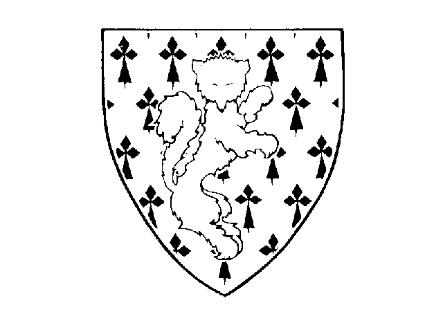

| En Belgique ZANNEKIN est une association de fait, aux Pays-Bas du Nord une fondation. Le nom ZANNEKIN est celui de Nicolas ZANNEKIN, combattant pour la liberté en Flandre maritime. Ce "doyen" des révoltes de la région côtière flamande périt en 1328 au Mont Cassel dans le combat contre les Français. Son courage et sa résistance contre l'occupation étrangère et contre l'injustice sociale l'élevèrent en symbole de la lutte pour la défense de l'héritage spirituel et culturel des Pays-Bas. Le blason personnel de Nicolas Zannekin a été repris par l'association (renard rouge sur champ d'hermine). |  |